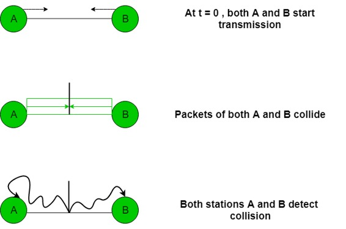

Prerequisite – Basics of CSMA/ CD, Collision Detection in CSMA/CD
Back-off algorithm is a collision resolution mechanism which is used in random access MAC protocols (CSMA/CD). This algorithm is generally used in Ethernet to schedule re-transmissions after collisions.
If a collision takes place between 2 stations, they may restart transmission as soon as they can after the collision. This will always lead to another collision and form an infinite loop of collisions leading to a deadlock. To prevent such scenario back-off algorithm is used.
Let us consider an scenario of 2 stations A and B transmitting some data:

After a collision, time is divided into discrete slots (Tslot) whose length is equal to 2t, where t is the maximum propagation delay in the network.
The stations involved in the collision randomly pick an integer from the set K i.e {0, 1}. This set is called the contention window. If the sources collide again because they picked the same integer, the contention window size is doubled and it becomes {0, 1, 2, 3}. Now the sources involved in the second collision randomly pick an integer from the set {0, 1, 2, 3} and wait that number of time slots before trying again. Before they try to transmit, they listen to the channel and transmit only if the channel is idle. This causes the source which picked the smallest integer in the contention window to succeed in transmitting its frame.
So, Back-off algorithm defines a waiting time for the stations involved in collision, i.e. for how much time the station should wait to re-transmit.
Waiting time = back–off time Let n = collision number or re-transmission serial number. Then, Waiting time = K * Tslot where K = [0, 2n – 1 ]
Example –
Case-1 :
Suppose 2 stations A and B start transmitting data (Packet 1) at the same time then, collision occurs. So, the collision number n for both their data (Packet 1) = 1. Now, both the station randomly pick an integer from the set K i.e. {0, 1}.

- When both A and B choose K = 0
–> Waiting time for A = 0 * Tslot = 0
Waiting time for B = 0 * Tslot = 0Therefore, both stations will transmit at the same time and hence collision occurs.
- When A chooses K = 0 and B chooses K = 1
–> Waiting time for A = 0 * Tslot = 0
Waiting time for B = 1 * Tslot = TslotTherefore, A transmits the packet and B waits for time Tslot for transmitting and hence A wins.
- When A chooses K = 1 and B chooses K = 0
–> Waiting time for A = 1 * Tslot = Tslot
Waiting time for B = 0 * Tslot = 0Therefore, B transmits the packet and A waits for time Tslot for transmitting and hence B wins.
- When both A and B choose K = 1
–> Waiting time for A = 1 * Tslot = Tslot
Waiting time for B = 1 * Tslot = TslotTherefore, both will wait for the same time Tslot and then transmit. Hence, collision occurs.
Probability that A wins = 1/4 Probability that B wins = 1/4 Probability of collision = 2/4
Case-2 :
Assume that A wins in Case 1 and transmitted its data(Packet 1). Now, as soon as B transmits its packet 1, A transmits its packet 2. Hence, collision occurs. Now collision no. n becomes 1 for packet 2 of A and becomes 2 for packet 1 of B.
For packet 2 of A, K = {0, 1}
For packet 1 of B, K = {0, 1, 2, 3}

Probability that A wins = 5/8 Probability that B wins = 1/8 Probability of collision = 2/8
So, probability of collision decreases as compared to Case 1.
Advantage –
- Collision probability decreases exponentially.
Disadvantages –
- Capture effect: Station who wins ones keeps on winning.
- Works only for 2 stations or hosts.
GATE Practice Question –